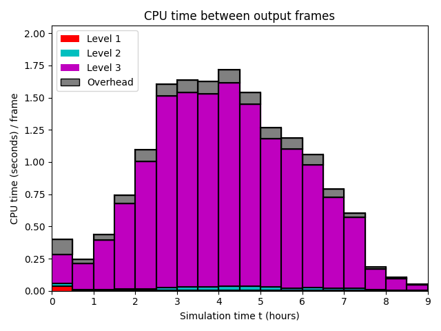
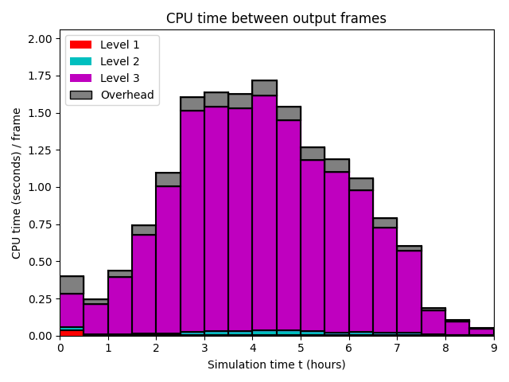

Datetime: 2021-01-17 15:34 From: /Users/rjl/clawpack_src/clawpack_master/geoclaw/examples/tsunami/chile2010/_output
============================== Timing Data ==============================
Integration Time (stepgrid + BC + overhead)
Level Wall Time (seconds) CPU Time (seconds) Total Cell Updates
1 0.271 0.274 0.864E+05
2 0.630 0.774 0.386E+06
3 16.452 46.232 0.214E+08
total 17.353 47.280 0.219E+08
All levels:
stepgrid 16.947 46.378
BC/ghost cells 0.388 0.880
Regridding 0.189 0.371
Output (valout) 3.802 3.694
Total time: 21.456 51.472
Using 3 thread(s)
Note: The CPU times are summed over all threads.
Total time includes more than the subroutines listed above
Note: timings are also recorded for each output step
in the file timing.csv.
clock_rate = 1000000000 per second, count_max = 9223372036854775807
clock_start = 1610926400880495000, clock_finish = 1610926422336682000
=========================================================================
 
